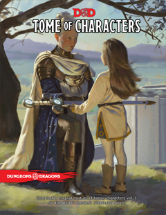

Content Creator
WIP notes
Here I list my projects that make use of existing editors or
level makers, for the enjoyment of others.
Here I list my projects that make use of existing editors or
level makers, for the enjoyment of others.
The idea behind these levels is to create thematically consistent Super World with 8 separate worlds inside. All levels are made in the Super Mario World game style because of my personal preference, and to keep the game mechanics the same throughout the Super World. Each world has a different course theme; first is Ground, second is Desert, etc. Most of my levels follow a repeating pattern (yes, very zeldaesque);



These PDFs were practice for dramatic writing and my introduction to HTML.
My Dungeon Master career started with the 5th edition of Dungeons & Dragons, and along with it came a whole new perspective to the game; the narrative perspective.
And with this newly gained perspective, I found myself creating character designs out of thirst for drama. These characters are not optimized builds for winning
in the game, but rather as intriguing character concepts I could make as possible. And after doing a few, I realized I wanted to make one for each class.
All characters contain a Twist of Fate as part of their backstory, which is a pivotal character arc moment the character has undergone, or will go later in the game, provided the Dungeon Master is up for it.
All characters are provided with a race, ability scores, a background, as well as spell, equipment, and subclass suggestions.
All characters are linked to each other in the grand narrative.
You can download the PDF here, and preview the PDF here.
 As I was creating characters for my Tome of Characters, it wasn't my plan to make multiple tomes. But riding that train of inspiration is extremely fun and I started to get ideas for more characters for classes I had already made a character for. And as those began to pile up, I started to realize that I'm going to make another tome.
As I was creating characters for my Tome of Characters, it wasn't my plan to make multiple tomes. But riding that train of inspiration is extremely fun and I started to get ideas for more characters for classes I had already made a character for. And as those began to pile up, I started to realize that I'm going to make another tome.
Characters in this book follow the same parameters as the first tome, providing all the necessary information for someone to pick up one of these characters and play them in their D&D table. But as an additional rule for myself, I did not want to make duplicate subclass choices. Initially, I even tried avoiding using the same race twice as well, but I could not keep that rule. Some races are just too cool.
Unfortunately, this PDF is not ready, so I have not provided any links to it. Learning other skills started to take precedence.